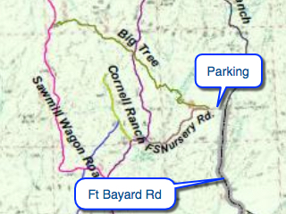

Hike New Mexico
w/ Tom & Ken
Fort Bayard Tree Hike
| Difficulty | Round-trip | Type | Elev. Chg. | Exposure | Wow Factor | Facilities | Seasons | Flickr | By Car |
|---|---|---|---|---|---|---|---|---|---|
| Easy | 2 miles | Out-and-back | 200 ft | Full sun | Huge juniper | None | All | Album |  |



- Mar 6, 2015: Former housing for all the officers
- Mar 6, 2015: Fort Bayard Central
- May 16, 2011: Flat and easy trail access to the tree
- May 16, 2011: A shrimp compared to the big one
- May 16, 2011: World's largest alligator juniper
- https://www.flickr.com/photos/139088815@N08/28006491125/in/album-72157669851935591
- https://www.flickr.com/photos/139088815@N08/27392547433/in/album-72157669851935591
- https://www.flickr.com/photos/139088815@N08/27392556663/in/album-72157669851935591
- https://www.flickr.com/photos/139088815@N08/28006510185/in/album-72157669851935591
- https://www.flickr.com/photos/139088815@N08/27971835636/in/album-72157669851935591
Just beyond the remains of Ft Bayard, there is a trail system which includes a trail to the world's largest alligator juniper tree. The fort itself is worth a visit, and has plaques marking various points of interest. The trail is not long and is easy to hike, therefore there is plenty of time to visit the grounds and hike the trail as well. There are smaller (but still large!) alligator junipers en route, but the "Champion Tree" is a monster in comparison.